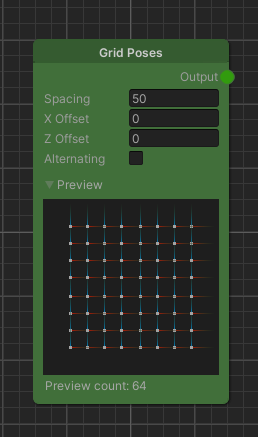
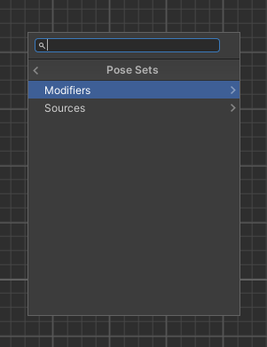
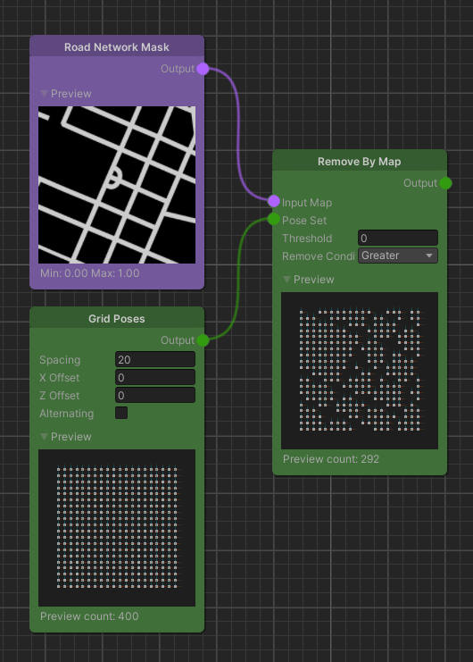
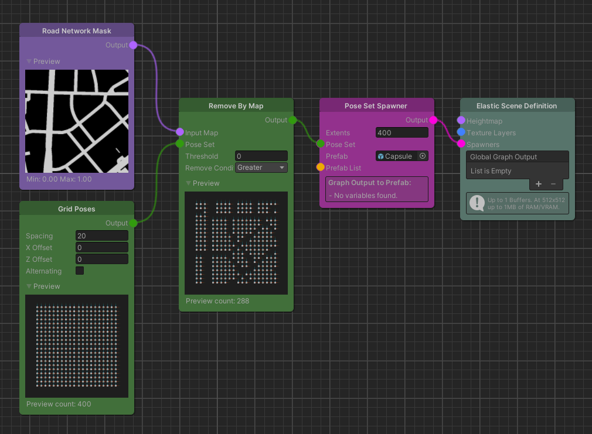
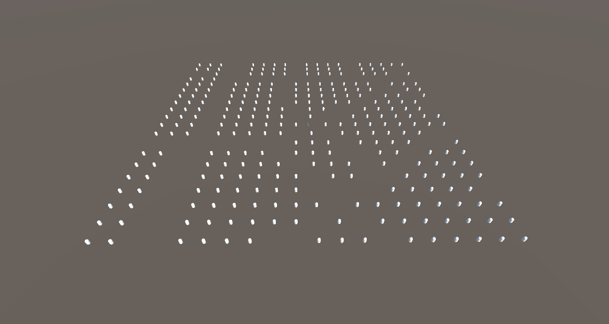

Pose Nodes
The Pose node type is a category that includes all Elastic Graph nodes that operate on Pose Sets. You can think of Poses as a 3D transform just without the scale component. The Elastic SDK implements Poses as a struct that holds a Position and a Rotation.

Poses can be used for a multitude of operations but are especially important to spawn objects in an elastic manner. While service data rasterized to a Map is rather static in terms of its geo locational relation, Poses are much more dynamic and be can translated or rotated based on either fixed value ranges or procedural gradients. Keeping this idea in mind when designing an Elastic Graph system, it becomes inherently easier to spawn objects in a way that they take certain features of your elastic environment into account.
Sources & Modifiers
Pose nodes are divide into Sources and Modifiers. While Sources generate an initial set of poses, Modifiers are used to alter position and rotation of such sets.

Besides basic transformational Modifiers like the Add Random Rotation or Add Random Translation node there are much more interesting Modifiers in terms of elastic content creation. When creating an elastic environment, you always have to keep in mind that the player drives along a real world road.
So, how can you prevent the Poses from colliding with the various objects in the virtual world?
To answer this the following example introduces a Pose Set Modifier called Remove By Map:

Note how we start with a fairly dense grid of poses but then remove some wherever the map input has a value greater than zero, effectively stamping out the road. This simple setup will already provide a set of poses that enables you to spawn objects only where there is no road.
So to finish this examples we connect the output of the Grid Poses node to a Pose Set Spawner and plug that into the Spawners output of the Elastic Scene Definition of the graph system.
 
Tip
Each Pose node renders a preview texture in the graph editor to get a general idea how Pose Sets are modified throughout the system.
For each Pose the white square represents the position inside the generation bounds
while the gizmo-like colored axes visualize the rotation.
In addition, Pose Set nodes render the count of generated poses inside the preview bounds below the preview.